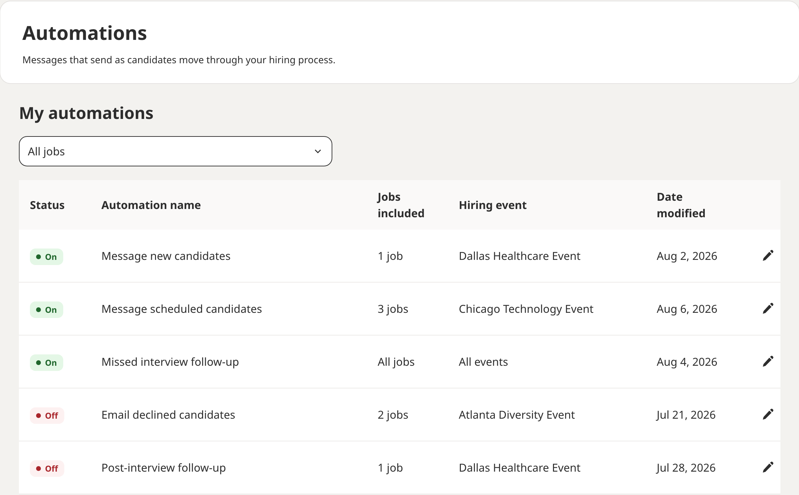

Setting up automations
Messages that send themselves as candidates move through your hiring process: the five automations, what triggers each one, and how to switch them on for one job or all of them.
What an automation is
An automation is a message that sends itself when something happens to a candidate: they request an interview, their interview is confirmed, they miss it, and so on. You write the message once and choose which jobs it applies to.
Automations live under Automations in the left navigation. The page opens on My automations, the list of the ones you have set up, with the five presets underneath.

The five automations
Each preset has a trigger and a message. These are the five:
| Automation | When it sends | What it sends |
|---|---|---|
| Message new candidates | When a candidate requests an interview | A message, the moment the request arrives |
| Message scheduled candidates | When an interview is scheduled | A message, so the interview is confirmed in writing |
| Email declined candidates | When an interview request is declined | An email, 3 days later |
| Missed interview follow-up | When a candidate misses their interview | A message, so you can rebook them |
| Post-interview follow-up | When an interview is completed | A message after the interview |
If you need one that is not here, use Request an automation at the bottom of the page.
Turning one on
- Select Automations in the left navigation.
- Under Automation presets, choose the one you want.
- Under Jobs included, choose Turn on automation for all jobs at all events or Turn on automation for individual jobs and tick the jobs.
- Write the Message template. This is the text the candidate receives.
- Select Turn on.
The automation appears in My automations with its status set to On. To pause it, open it with the pencil and select Turn off; the message and job list are kept for when you switch it back on.
A template goes to every candidate the trigger catches, on every job you included. Keep it specific to the step, not to one role: what happens next, when, and who to contact. If two jobs need different wording, turn the automation on for individual jobs and write one per job.
What each message should say
Each automation lands at a different moment, so each message has a different job. These are starting points to adapt in the Message template field.
- Message new candidates. Thank them for requesting an interview, say when they will hear back, and tell them what to prepare. If you review requests by hand, say so, so a wait of a day does not read as silence.
- Message scheduled candidates. Confirm the date, the start time and the format in one line, then the one thing they must do: join the JobFairX link on time, have their phone on, or where to park and who to ask for.
- Email declined candidates. Thank them, be clear that this role is closed to them, and point them to your other open jobs or the next event. It goes out three days after the decline, which is why it is an email and not a message.
- Missed interview follow-up. Keep it warm. Many no-shows are a wrong time zone or a dropped call. Give one way to rebook and a deadline.
- Post-interview follow-up. Thank them, tell them when they will hear a decision, and name the next step if there is one.
When Auto accept interviews is on, a request is confirmed the moment it arrives, so Message new candidates and Message scheduled candidates fire within seconds of each other. Keep the first one short, or turn on only the second.
Where else you see them
The event's edit page has an Automations card that shows the first automation, Message new candidates, with its own switch. The card notes that it is one of five and points you to the Automations page for the rest. In the lobby before an event, the Prepare for your interview panel includes Set up automations.
Managing your automations
My automations lists every automation with its Status, the Jobs included, the Hiring event it belongs to and the Date modified. The All jobs filter narrows the list to one job. Select the pencil on a row to change the message or the jobs.
An automation set to all jobs at all events keeps working on events you register for later, so check the message still reads well before each new event.
What to do next
Where to go from here.
- Creating and editing events Adding jobs, choosing how you interview, and setting capacity.
- Running your event day What the lobby shows before and during an event, and how to run an interview.
- Choosing your interview slot length 15 or 30 minute interview slots, and how the choice shapes your event day.
- AI interview notes What the note taker records in a video interview and what it never does.
- Analytics Reading the Analytics page: the date range, the four cards, the chart and the events table.
Still need help?
If something on this page does not match what you see in your account, contact JobFairX support and include your event name and date.